14 Variant Effect Prediction
Classical variant effect prediction required labels: pathogenic variants to define one class, benign variants to define another, and enough examples of each to train a classifier. This requirement created a fundamental bottleneck. The variants most important to classify, those that are rare, never before observed, and located in poorly characterized genes, were precisely those for which labels did not exist. Foundation models offer a different paradigm: score variants using patterns learned from unlabeled sequences, without ever seeing a pathogenic/benign label during pretraining. A protein language model trained only to predict masked amino acids can distinguish damaging substitutions from benign polymorphisms because evolution has already encoded this distinction in the sequences that survived. A DNA language model can identify regulatory disruptions because it learned the grammar of functional elements from billions of nucleotides. The variants that violate learned patterns are the variants that disrupt function.
This zero-shot capability does not eliminate the need for labeled data but changes its role. Rather than training classifiers from scratch, practitioners fine-tune foundation models on modest variant datasets, leveraging pretrained knowledge to achieve performance impossible for models that start from random initialization. The combination of self-supervised pretraining and supervised fine-tuning produces variant effect predictors that outperform classical methods across most benchmarks while requiring far less task-specific data. AlphaMissense, ESM-1v, and similar systems demonstrate that foundation model representations capture variant effects across protein families, including families with no labeled variants in training data.
Yet significant challenges remain. Foundation models predict that variants are damaging without explaining why. Calibration varies across variant types, protein families, and populations, creating uncertainty about when predictions can be trusted. The distinction between “evolutionarily unusual” and “clinically pathogenic” is real: not every rare substitution causes disease, and not every disease-causing variant appears evolutionarily constrained.
14.1 Foundation Model Paradigm for Variant Interpretation
Classical variant effect predictors operate by aggregating hand-crafted features: conservation scores computed from multiple sequence alignments, amino acid property changes, protein domain annotations, and regulatory marks at genomic loci (Chapter 4). Methods like CADD train machine learning models to distinguish pathogenic from benign variants using these features, achieving useful discrimination but ultimately limited by what features the developers chose to include. When a variant falls in a region poorly covered by existing annotations, classical methods have little to offer.
Foundation models invert this relationship. Rather than engineering features, they learn representations from raw sequence data during pretraining, then apply those representations to variant interpretation. A protein language model trained to predict masked amino acids implicitly learns which substitutions violate evolutionary constraints. A DNA language model trained to predict nucleotides in genomic context learns which changes disrupt sequence grammar. The representations encode information about structure, function, and constraint that was never explicitly labeled during training.
This paradigm shift has practical consequences. Coverage extends to any variant in any gene, not just those with extensive prior annotation. Representations capture subtle patterns (co-evolution between distant residues, context-dependent motif strength) that resist manual feature engineering. Transfer learning enables rapid adaptation to new tasks and variant classes, with the specific strategies detailed in Chapter 9. The cost is interpretability: understanding why a foundation model assigns a particular score requires specialized analysis techniques rather than simple inspection of feature weights (Chapter 24).
Three architectural families dominate current VEP applications. Protein language models (Chapter 12) encode amino acid sequences and score missense variants by measuring likelihood changes. DNA language models (Chapter 11) operate on nucleotide sequences and can score variants of any type. Regulatory models (Chapter 13) predict molecular phenotypes (chromatin accessibility, gene expression, splicing) and score variants by their predicted impact on these phenotypes. The strongest-performing systems combine elements from multiple families.
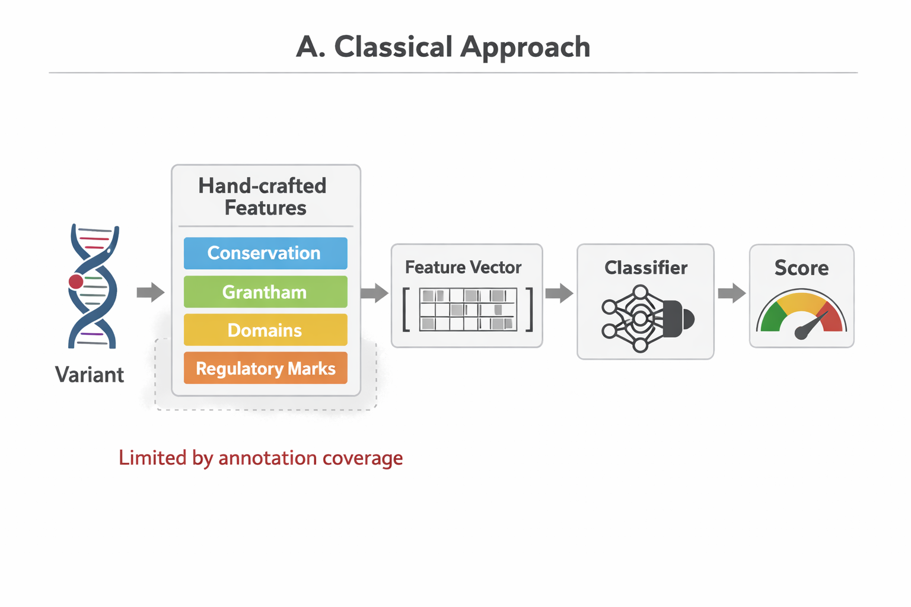
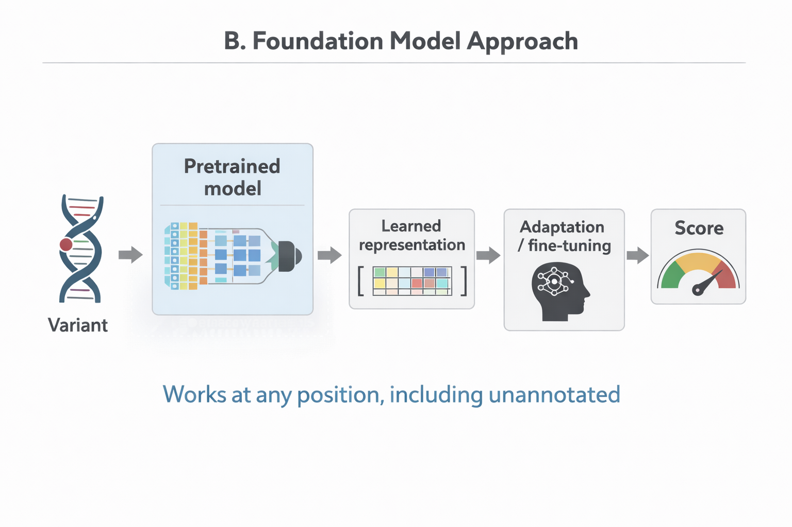
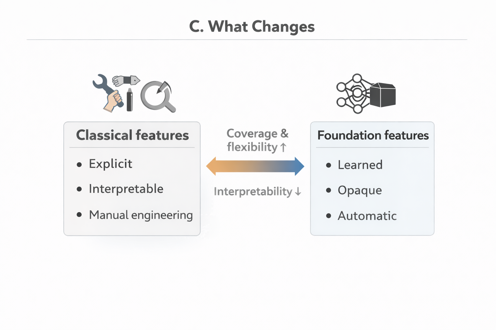

14.1.1 Zero-Shot and Supervised Approaches
Foundation model VEP methods divide into two paradigms. Zero-shot approaches apply pretrained models directly without task-specific training: ESM-1v scores variants by comparing amino acid likelihoods, requiring no pathogenicity labels. The model’s pretraining objective (masked token prediction) implicitly teaches which substitutions violate evolutionary constraints. Supervised approaches like AlphaMissense add task-specific training layers and optimize explicitly for pathogenicity prediction using labeled examples.
The choice involves tradeoffs. Zero-shot methods avoid label bias entirely; they cannot learn to recapitulate existing predictor scores because they never see those scores during training. Supervised methods achieve stronger discrimination when high-quality labels exist but risk inheriting biases from training data. Zero-shot approaches generalize more reliably to novel proteins outside training distributions; supervised methods may overfit to well-studied gene families. In practice, the strongest current systems (AlphaMissense, popEVE) combine foundation model representations with some supervised adaptation, attempting to capture benefits of both paradigms.
14.2 Protein-Based Variant Effect Prediction
Missense variants (single amino acid substitutions) account for approximately half of known pathogenic variants in ClinVar, making protein-level prediction a central challenge [Citation Needed]. Foundation model approaches exploit a simple insight: evolution has already tested billions of amino acid substitutions across millions of years; variants that repeatedly survive natural selection are likely tolerable, while those never observed in homologous proteins likely disrupt function.
14.2.1 Zero-Shot Scoring with Protein Language Models
The simplest foundation model approach to missense VEP requires no task-specific training. A protein language model trained on masked token prediction assigns probabilities to each amino acid at each position given surrounding context. Variant effect scores emerge from comparing the probability of the reference amino acid to the probability of the variant amino acid.
ESM-1v operationalizes this approach using the ESM-2 architecture fine-tuned for single-sequence variant effect prediction (Meier et al. 2021). For a variant substituting amino acid \(a_\text{ref}\) with \(a_\text{var}\) at position i, the score is computed as:
\[\Delta \text{LLR} = \log P(a_\text{var} | \text{context}) - \log P(a_\text{ref} | \text{context})\]
Negative scores indicate that the variant amino acid is less probable than reference in learned evolutionary context, suggesting potential deleteriousness. The model sees only the single query sequence, not multiple sequence alignments, yet achieves discrimination competitive with alignment-based methods on deep mutational scanning benchmarks. The emergence of this capability from masked token prediction, without explicit training on variant effects, exemplifies the emergent biological knowledge discussed in Section 12.1.2.
This zero-shot capability reflects what protein language models learn during pretraining: structural constraints (buried positions are hydrophobic), functional constraints (active sites are conserved), and co-evolutionary patterns (compensating mutations at contacting residues). The model has never seen pathogenicity labels, yet its predictions correlate with disease association because evolution and disease share underlying biology.
14.2.2 Alignment-Based Models: EVE and popEVE
An alternative approach explicitly models multiple sequence alignments rather than relying on implicit evolutionary information in single-sequence representations. EVE (Evolutionary Model of Variant Effect) fits a variational autoencoder to the MSA for each protein, learning a generative model that captures position-specific and pairwise constraints (Frazer et al. 2021). Variant scores derive from the change in sequence probability under this model.
The EVE architecture consists of an encoder that maps sequences to a latent space and a decoder that reconstructs sequences from latent representations. Training maximizes a lower bound on sequence likelihood across the MSA. For variant scoring, EVE computes the log-likelihood ratio between mutant and wild-type sequences, capturing how surprising the substitution appears given the evolutionary record for that specific protein.
popEVE extends this framework with improved training procedures and explicit modeling of population allele frequencies (Orenbuch et al. 2025). By incorporating frequency information, popEVE better separates rare deleterious variants from common benign polymorphisms. The model achieves strong performance on ClinVar classification while providing uncertainty estimates through ensemble disagreement.
The tradeoff between single-sequence and MSA-based approaches involves coverage versus depth. ESM-1v scores any protein sequence without requiring alignment construction. EVE provides stronger performance when high-quality MSAs are available but cannot score proteins lacking sufficient homologs. For well-studied protein families with deep evolutionary sampling, MSA-based methods remain competitive; for orphan proteins or rapidly evolving sequences, single-sequence models offer the only foundation model option.
14.2.3 AlphaMissense: Structure-Informed Pathogenicity Prediction
AlphaMissense represents the current state of the art for proteome-wide missense pathogenicity prediction, combining protein language model representations with structural information from AlphaFold2 (Cheng et al. 2023). The system provides precomputed scores for 71 million possible missense variants across the human proteome, enabling instant lookup for any variant in any protein-coding gene.
The architecture integrates multiple information sources. Sequence representations come from a protein language model encoding the wild-type sequence and mutation position. Structural representations derive from AlphaFold2 predictions, capturing local geometry (secondary structure, solvent accessibility, packing density) and longer-range contacts. A neural network combines these representations to produce a pathogenicity probability between 0 and 1.
Training uses a carefully constructed dataset that avoids the circularity plaguing earlier predictors. Rather than training on ClinVar labels (which themselves derive from computational predictions), AlphaMissense uses population frequency as a proxy for pathogenicity: variants common in gnomAD are likely benign, while variants absent from large population samples and observed in disease contexts are likely pathogenic. This approach reduces the risk of learning features that simply recapitulate existing predictor scores.
Calibration receives explicit attention. Raw model outputs undergo isotonic regression calibration against held-out ClinVar variants, ensuring that predicted probabilities correspond to observed pathogenic proportions (Section 23.2). A score of 0.8 should mean that 80% of variants with similar scores are pathogenic, enabling meaningful clinical interpretation. AlphaMissense reports calibrated scores along with discrete classifications (likely pathogenic, likely benign, uncertain) at thresholds chosen to achieve specific precision targets.
Performance on independent benchmarks substantially exceeds classical predictors. On deep mutational scanning datasets (where experimental fitness measurements provide ground truth independent of clinical labels), AlphaMissense achieves correlations of 0.5 to 0.7 depending on the assay, compared to 0.3 to 0.5 for CADD or PolyPhen-2 [Citation Needed]. On ClinVar expert-reviewed variants held out from training, AlphaMissense achieves auROC values above 0.9, representing a meaningful improvement over the 0.85 to 0.88 typical of classical methods [Citation Needed].
The structural component proves essential for this performance. Ablation experiments removing AlphaFold2 features degrade performance substantially, particularly for variants at protein-protein interfaces and buried core positions where local geometry determines functional impact. The protein language model captures evolutionary constraint; structural information explains why that constraint exists.


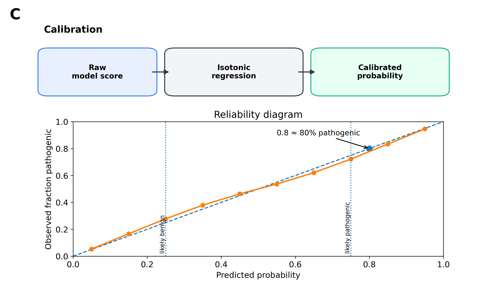
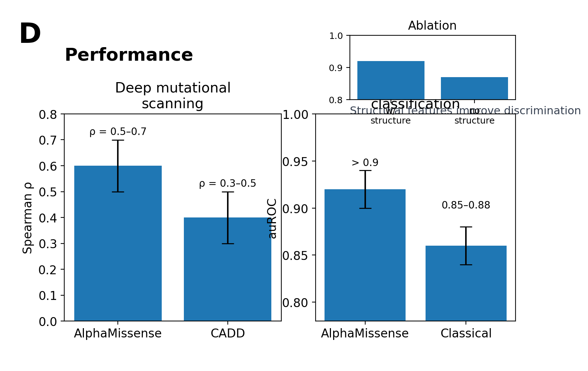
14.3 DNA-Based Variant Effect Prediction
Approximately 98% of the human genome lies outside protein-coding regions, yet noncoding variants contribute substantially to disease risk through effects on gene regulation, splicing, and genome stability [Citation Needed]. Predicting the impact of these variants requires models that operate directly on DNA sequence rather than translated protein.
14.3.1 Splice Variant Prediction with SpliceAI
Splicing variants illustrate both the promise and current limitations of deep learning for noncoding VEP. Approximately 10% of pathogenic variants in ClinVar act through splicing mechanisms, disrupting the precise excision of introns from pre-mRNA [Citation Needed]. Classical approaches relied on position weight matrices matching consensus splice site sequences, achieving limited sensitivity for variants outside the core GT-AG dinucleotides.
SpliceAI applies the dilated convolutional architecture introduced in Chapter 6 to predict splice site usage from raw DNA sequence (Jaganathan et al. 2019). The architecture processes 10,000 nucleotides of context through 32 residual blocks with dilated convolutions (dilation rates increasing from 1 to 128), enabling the receptive field to span several kilobases while maintaining nucleotide resolution. Output heads predict splice donor probability, splice acceptor probability, and junction usage at each position.
For variant effect prediction, SpliceAI compares predictions between reference and alternate sequences. The delta score quantifies the change in splice site probability, with positive values indicating gained splice sites and negative values indicating lost sites. Scores exceeding 0.2 correlate with experimentally validated splicing changes; scores above 0.5 have high specificity for pathogenic splicing variants [Citation Needed].
Clinical deployment has validated SpliceAI’s utility. Illumina integrated the model into their clinical interpretation pipeline, and multiple diagnostic laboratories use SpliceAI scores as supporting evidence for ACMG classification. The architectural innovations that enable this performance, including the dilated convolution strategy for expanding receptive fields, are detailed in Section 6.5. The model identifies pathogenic splicing variants missed by classical methods, particularly deep intronic variants that create novel splice sites through cryptic activation.
Limitations reflect the model’s training data. SpliceAI learned from annotated transcripts representing major isoforms in common tissues. Tissue-specific alternative splicing, rare isoforms, and developmental stage-specific patterns fall outside the training distribution. The model also does not capture downstream consequences: whether a predicted splicing change produces a functional protein, triggers nonsense-mediated decay, or has no phenotypic effect requires additional analysis.
14.3.2 Regulatory Variant Prediction with Enformer
While SpliceAI addresses one specific noncoding mechanism, regulatory variants that alter enhancer activity, promoter function, or chromatin organization require different approaches. Enformer (Chapter 13) predicts multiple molecular phenotypes (histone modifications, transcription factor binding, chromatin accessibility, gene expression) from 196,608 base pairs of DNA sequence, providing a substrate for regulatory VEP (Ž. Avsec et al. 2021).
Variant effect prediction with Enformer compares predicted tracks between reference and alternate sequences. For a variant in an enhancer, the model might predict reduced H3K27ac signal and decreased CAGE expression at the target promoter. These molecular predictions can be aggregated into variant effect scores, with larger predicted changes indicating greater functional impact.
Several challenges complicate Enformer-based VEP. The model predicts relative effects (fold changes in predicted signal) rather than absolute deleteriousness. Calibrating these predictions against pathogenicity labels requires additional supervised training. Cell-type specificity adds complexity: a variant might strongly affect predictions in cardiac tissue while showing no effect in liver, requiring prior knowledge of relevant tissues for clinical interpretation.
Sei extends this approach by learning a regulatory vocabulary: clusters of predicted effects that correspond to interpretable categories like “active promoter,” “strong enhancer,” or “CTCF binding site” (Chen et al. 2022). Variant scores reflect shifts between these categories, providing more interpretable outputs than raw track changes. A variant that converts an enhancer prediction to a quiescent state has clearer implications than one that reduces H3K27ac by 0.3 log-fold.
14.3.3 DNA Language Models: GPN-MSA and Evo 2
DNA language models provide an alternative to phenotype prediction: scoring variants by how unexpected they appear in learned sequence context, analogous to protein language model approaches for missense variants.
GPN-MSA combines DNA language modeling with multi-species sequence alignments (Benegas et al. 2024). Building on the GPN approach introduced in Section 11.4, the model processes aligned sequences from dozens of vertebrate species, learning which positions are conserved and which tolerate variation. Variant scores derive from likelihood ratios: how much less probable is the variant allele compared to reference given the alignment context? This approach captures deep evolutionary constraint missed by simple conservation scores while providing genome-wide coverage including noncoding regions.
Evo 2 pushes context length to approximately one megabase, enabling single models to capture local motifs and long-range dependencies simultaneously (Brixi et al. 2025). The StripedHyena architecture provides computational efficiency at this scale through state-space-based sequence modeling rather than quadratic attention, as detailed in Section 11.5.3 and Chapter 7. Training on diverse genomes across the tree of life teaches general principles of sequence organization that transfer to human variant interpretation.
Zero-shot variant scoring with Evo 2 follows the standard likelihood ratio approach. Initial benchmarks show performance competitive with conservation-based scores for coding variants and potentially superior performance for noncoding variants where local sequence context matters more than position-specific conservation. The extremely long context enables modeling of effects mediated by distal elements, though whether this theoretical capability translates to improved VEP remains under investigation.
14.3.4 AlphaGenome: Unified Multi-Omic Variant Effect Prediction
AlphaGenome (Section 13.5) represents the most ambitious current attempt at comprehensive VEP, predicting multiple molecular phenotypes from megabase-scale DNA sequence and using those predictions to assess variant effects across modalities (Z. Avsec, Latysheva, and Cheng 2025).
Variant effect prediction with AlphaGenome provides mechanistically interpretable outputs. A promoter variant might show reduced accessibility and decreased expression prediction. An enhancer variant might show weakened contact with its target promoter in addition to reduced local histone acetylation. A splicing variant triggers SpliceAI-like splice site changes while also affecting regulatory track predictions near the affected exon.
The multi-omic approach enables variant prioritization that considers multiple mechanisms simultaneously. A variant in a regulatory element that affects accessibility, expression, and chromatin contacts represents stronger evidence than one affecting only a single predicted phenotype. Conversely, variants with no predicted effect across modalities can be deprioritized despite proximity to disease genes.
Practical deployment involves tradeoffs. Evaluating a single variant requires forward passes through the full model, incurring substantial computational cost compared to lookup-based approaches like AlphaMissense. The model may exhibit overconfidence when extrapolating beyond training cell types. Calibrating multi-dimensional predictions into single pathogenicity scores remains an open problem. These constraints position AlphaGenome as a tool for detailed mechanistic investigation of prioritized variants rather than genome-wide screening.
14.4 Combining Evidence Across Modalities
No single model addresses all variant types and mechanisms. Missense variants in protein-coding regions call for protein-level predictors; splicing variants require splice-specific models; regulatory variants benefit from long-context DNA models. Practical VEP workflows combine multiple predictors to achieve comprehensive coverage.
14.4.1 Integration Strategies
The simplest integration approach applies different models to different variant classes. Missense variants receive AlphaMissense scores; synonymous and intronic variants near splice sites receive SpliceAI scores; promoter and enhancer variants receive Enformer or AlphaGenome predictions. This modular strategy ensures that each variant type receives predictions from an appropriate model.
More sophisticated integration aggregates scores across models for the same variant. A missense variant might receive both AlphaMissense (protein impact) and Enformer (regulatory impact, relevant if the codon overlaps a regulatory element) predictions. Combining these requires decisions about weighting and potential double-counting of shared information.
Bayesian approaches offer principled integration. Priors encode beliefs about variant mechanism proportions; likelihoods incorporate model predictions given mechanism; posteriors combine evidence across models while respecting uncertainty. REVEL (Rare Exome Variant Ensemble Learner) demonstrated this approach for classical predictors [Citation Needed]; extending it to foundation model outputs requires careful calibration of each component score.
14.4.2 Avoiding Double-Counting
Foundation models trained on overlapping data risk capturing correlated rather than independent information. AlphaMissense and ESM-1v both encode evolutionary constraint; combining their scores as independent evidence overweights evolutionary signal. Similarly, conservation-based DNA models like GPN-MSA share information with phyloP scores already incorporated in classical predictors.
Correlation analysis helps quantify redundancy. If two model scores correlate above 0.8 across a benchmark dataset, they likely provide similar information and should not be counted as independent evidence. Residual analysis can identify what unique signal each model contributes beyond shared components.
For ACMG classification, guidelines specifically address computational evidence weighting. The PP3 (computational evidence supporting pathogenicity) and BP4 (computational evidence supporting benignity) criteria apply when multiple tools agree. Using five correlated predictors that all derive from evolutionary conservation should not count as five independent pieces of evidence. Clinical laboratories develop local policies for which tools to consult and how to weight their outputs, ideally based on validation against known variants in their patient population.
14.4.3 Practical Workflow Design
An effective VEP workflow balances comprehensiveness against efficiency. Genome-wide screening might use fast, zero-shot models (DNA language model likelihood scores) to identify variants deviating from expected sequence patterns. Prioritized variants then receive detailed evaluation with computationally expensive models (AlphaGenome multi-omic predictions). Final interpretation combines computational scores with population frequency, gene-level constraint metrics, segregation data, and clinical phenotype.
The ordering matters for efficiency. Filtering the majority of variants with fast models before applying expensive models reduces computational cost by orders of magnitude. The choice of filtering threshold trades sensitivity against specificity: strict thresholds miss true pathogenic variants; lenient thresholds burden downstream analysis with false positives. Threshold selection should match intended use: diagnostic applications prioritize sensitivity while research screening may prioritize specificity.

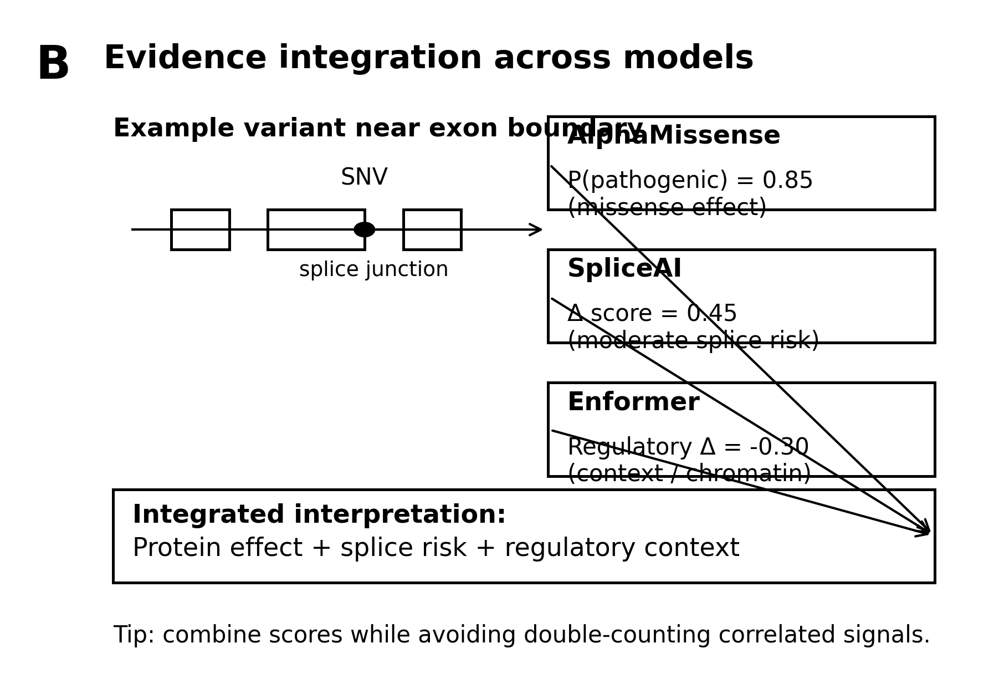
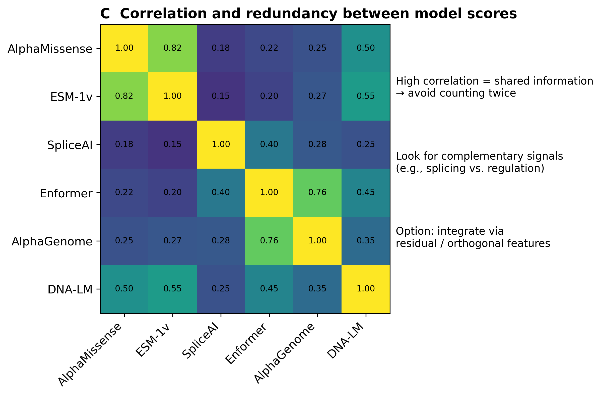

14.5 Calibration and Clinical Categories
A pathogenicity score of 0.73 means nothing in isolation. If that score reflects a well-calibrated model, approximately 73% of variants receiving similar scores are truly pathogenic, and clinical decisions can proceed accordingly. If the model is miscalibrated, the true pathogenic rate could be 40% or 95%, rendering the score unreliable for clinical interpretation. Model scores become clinically useful only when they map to actionable categories through calibration, the process of ensuring that predicted probabilities match observed frequencies.
14.5.1 Assessing Calibration
Calibration plots (reliability diagrams) visualize the relationship between predicted probabilities and observed frequencies. Variants are binned by predicted score, and the proportion of pathogenic variants in each bin is plotted against the bin’s mean predicted probability. Perfect calibration falls on the diagonal: a predicted 0.8 pathogenicity corresponds to an 80% observed pathogenic rate. Points below the diagonal indicate overconfidence (predictions exceed reality), while points above indicate underconfidence.
Most raw model outputs are poorly calibrated. Neural networks trained with cross-entropy loss tend toward overconfidence, predicting probabilities near 0 or 1 more often than warranted. Protein language model likelihood ratios produce unbounded scores requiring transformation before probability interpretation. The theoretical foundations of why deep networks and foundation models exhibit systematic miscalibration, along with formal definitions of calibration metrics including expected calibration error (ECE), are developed in Section 23.2. The specific challenges posed by foundation model miscalibration in clinical settings are examined in Section 23.2.3.
14.5.2 Calibration Methods for Variant Effect Prediction
Post-hoc calibration transforms raw model outputs into probabilities that match observed pathogenicity frequencies. The technical details of these transformations, including temperature scaling, Platt scaling, and isotonic regression, are developed in Section 23.3. Here we focus on their application to variant effect prediction.
Calibration should use data representative of deployment conditions. Calibrating on ClinVar expert-reviewed variants produces reliable performance on similar variants but may not transfer to novel genes, rare populations, or variant classes underrepresented in ClinVar. A model calibrated on well-studied cancer genes may be systematically overconfident when applied to genes with fewer characterized variants. Stratified calibration by gene function, variant class, or population improves reliability at the cost of increased data requirements.
The systematic biases that arise from distribution shift between calibration and deployment present particular challenges for clinical genomics. Foundation models trained predominantly on European-ancestry data may exhibit differential calibration across populations, producing well-calibrated predictions for some patient groups and miscalibrated predictions for others (Chapter 22). These disparities have direct implications for equitable care, as clinical decisions based on miscalibrated predictions will be systematically worse for patients from underrepresented backgrounds. The sources and consequences of such differential calibration are examined in Section 23.2.


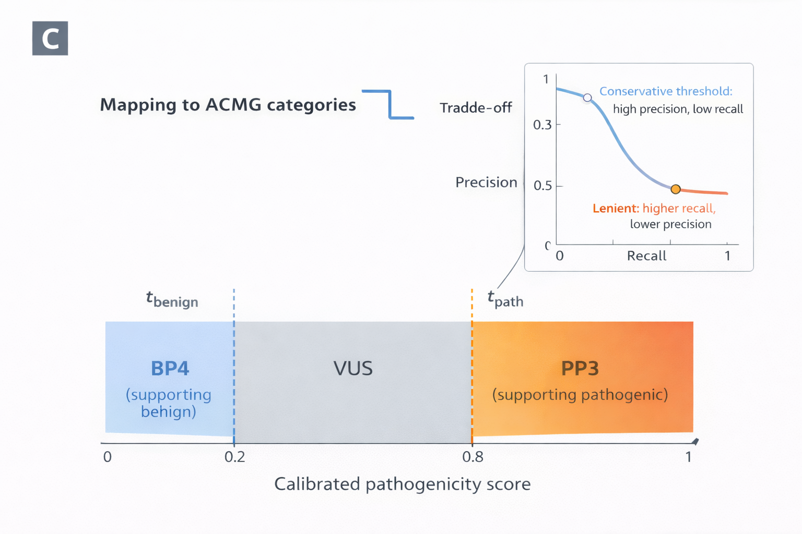

14.5.3 Mapping to ACMG Categories
The ACMG-AMP variant classification framework defines five categories: pathogenic, likely pathogenic, uncertain significance, likely benign, and benign (Richards et al. 2015). Computational evidence contributes to classification through specific criteria: PP3 (computational evidence supporting pathogenicity) and BP4 (computational evidence supporting benignity).
Mapping continuous foundation model scores to these discrete criteria requires threshold selection. Conservative thresholds ensure high precision at the cost of low recall: only variants with very high (or very low) scores receive computational evidence designation. Lenient thresholds increase recall but admit more false positives, potentially inflating pathogenicity classifications. The choice reflects a fundamental trade-off between missing actionable variants and overclassifying benign variants as potentially harmful.
ClinGen sequence variant interpretation working groups have developed model-specific recommendations for computational predictors, specifying score thresholds that correspond to different evidence strengths. Tavtigian and colleagues proposed a Bayesian framework for calibrating computational evidence strength based on odds ratios of pathogenicity at different score thresholds (Tavtigian et al. 2018). Under this framework, thresholds must achieve specific odds ratios (greater than 2.08 for supporting evidence, greater than 4.33 for moderate evidence) to qualify for particular ACMG evidence levels. Pejaver et al. applied this framework to calibrate 13 classical missense predictors, establishing that four tools (BayesDel, MutPred2, REVEL, VEST4) could provide up to Strong evidence for pathogenicity (Pejaver et al. 2022). In 2025, ClinGen extended these calibrations to foundation model-based predictors, demonstrating that AlphaMissense, ESM1b, and VARITY all reach Strong evidence for pathogenicity and Moderate for benignity at appropriate score thresholds (Bergquist et al. 2025). Laboratories should select tools with established calibrations and document threshold choices in variant reports.
14.5.4 The Challenge of Uncertain Significance
The variant of uncertain significance (VUS) category deserves particular attention. Variants with intermediate foundation model scores genuinely reflect uncertainty: the models cannot confidently distinguish pathogenic from benign. This uncertainty may arise from limited training data for the gene or variant class, conflicting signals in the sequence context, or genuine biological ambiguity where the variant’s effect depends on factors the model cannot observe.
Forcing these variants into discrete categories by applying arbitrary cutoffs misrepresents the actual evidence. A variant scored at 0.55 is not “slightly pathogenic”; it is a variant for which the model has insufficient evidence to discriminate. Reporting calibrated probabilities alongside discrete classifications preserves information for downstream decision-making. Clinicians can then integrate computational evidence with functional studies, segregation data, and clinical presentation, appropriately weighting the computational contribution based on its expressed uncertainty.
The broader framework for understanding and quantifying uncertainty in foundation model predictions, including methods for distinguishing uncertainty arising from limited data (epistemic uncertainty) from uncertainty inherent in the prediction task (aleatoric uncertainty), is developed in Chapter 23. Conformal prediction methods that provide finite-sample coverage guarantees for variant classification are examined in Section 23.5.
14.6 Uncertainty Quantification
Calibration addresses systematic bias in probability estimates; uncertainty quantification addresses the confidence of individual predictions. A well-calibrated model might correctly estimate that 70% of variants in some category are pathogenic, but for any individual variant, we want to know whether the model’s prediction is reliable or whether the variant falls outside the model’s competence.
14.6.1 Sources of Uncertainty
Epistemic uncertainty reflects gaps in the model’s knowledge: regions of input space with sparse training data, variant types rarely observed during training, or proteins from understudied families. This uncertainty is reducible in principle by collecting more data and can be estimated by measuring model disagreement across training variations.
Aleatoric uncertainty reflects inherent noise in the prediction target: variants whose pathogenicity genuinely varies across individuals or contexts, or cases where the same score corresponds to both pathogenic and benign variants for biological rather than modeling reasons. This uncertainty is irreducible by additional training and represents fundamental limits on predictability.
Distinguishing these uncertainty types matters for interpretation. High epistemic uncertainty suggests caution: the model has not seen similar variants and may be extrapolating unreliably. High aleatoric uncertainty suggests that the variant’s effect genuinely depends on factors not captured by sequence alone.
14.6.2 Uncertainty Estimation Methods
Ensemble methods train multiple models on different data subsets or with different random initializations. Prediction variance across ensemble members estimates epistemic uncertainty. Large disagreement indicates that the prediction depends strongly on training specifics rather than robust learned patterns. Deep ensembles provide well-calibrated uncertainty estimates but multiply computational cost linearly with ensemble size.
Monte Carlo dropout approximates Bayesian inference by applying dropout at test time and averaging predictions across multiple stochastic forward passes. Variance across passes estimates uncertainty without training multiple models. This approach adds modest computational overhead and can be applied to any dropout-containing architecture.
Conformal prediction provides distribution-free uncertainty quantification with coverage guarantees (Angelopoulos and Bates 2023). Given a calibration set, conformal methods construct prediction sets guaranteed to contain the true label with specified probability (e.g., 90%). For variant classification, this might produce sets like {pathogenic, uncertain} or {benign} depending on the variant and desired coverage. Larger prediction sets indicate greater uncertainty; single-element sets indicate confident predictions. Section 23.5 examines conformal methods for genomic applications in detail.
14.6.3 Out-of-Distribution Detection
Beyond quantifying uncertainty for in-distribution predictions, responsible deployment requires detecting when inputs fall outside the model’s training distribution. A protein language model trained on natural proteins may produce confident but unreliable predictions for synthetic sequences or fragments. A regulatory model trained on common cell types may fail on rare developmental stages.
Likelihood-based detection uses the model’s own representations to identify unfamiliar inputs. Sequences with low embedding density or anomalous attention patterns may fall outside the training distribution regardless of predicted scores. Flagging these inputs for manual review prevents automated classification of cases the model cannot reliably assess.
Distance-based methods compare new inputs to training examples in representation space. Variants far from any training example in embedding space warrant skepticism even if the model produces confident predictions. Maintaining summary statistics of training representations enables efficient distance computation at deployment.
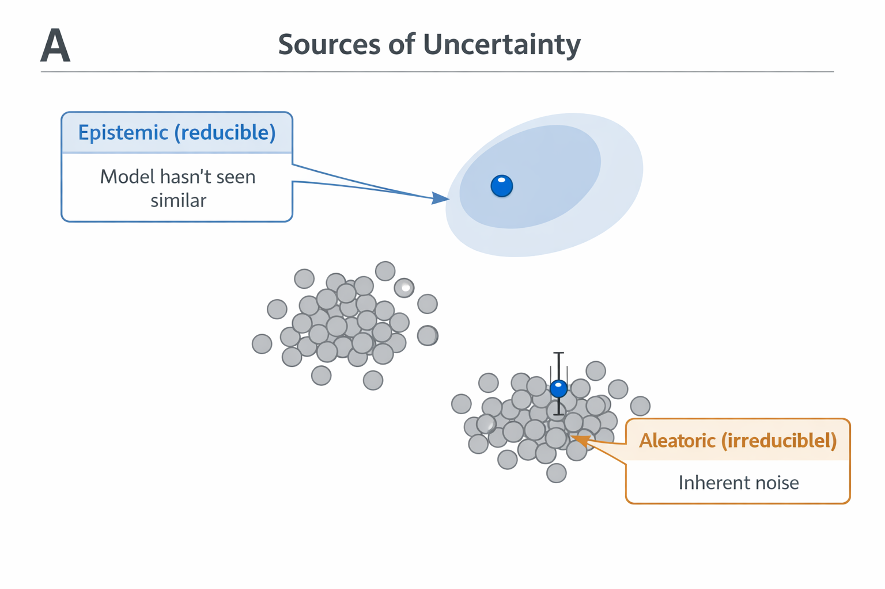


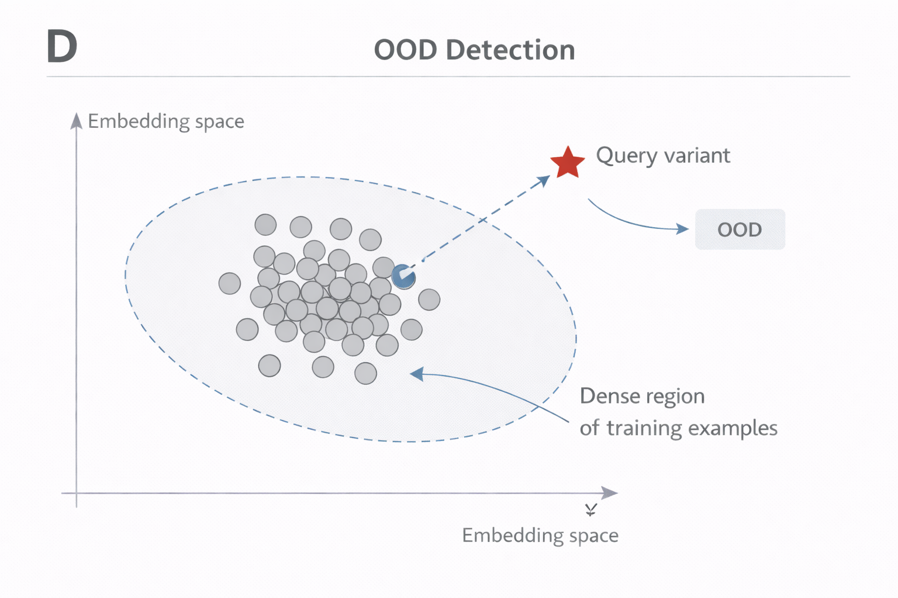
Chapter 23 develops uncertainty quantification methods in detail, including practical implementation guidance and evaluation metrics. For VEP applications, the key insight is that uncertainty estimates complement point predictions: high-confidence predictions can inform clinical decisions; low-confidence predictions should prompt additional evidence gathering rather than blind acceptance of model outputs.
14.7 What Foundation Models Add
Having surveyed current foundation model approaches, we can now directly address what they contribute beyond classical methods (Chapter 4). The answer is nuanced: substantial improvements in some domains, modest gains in others, and persistent blind spots that new architectures have not yet resolved.
14.7.1 Improved Discrimination
On standard benchmarks, foundation model VEP methods consistently outperform classical predictors. AlphaMissense achieves auROC of 0.91 on held-out ClinVar missense variants compared to 0.85 for CADD [Citation Needed]. SpliceAI detects pathogenic splicing variants with sensitivity of 0.90 compared to 0.60 for MaxEntScan [Citation Needed]. GPN-MSA scores correlate more strongly with deep mutational scanning measurements than phyloP or GERP [Citation Needed].
These improvements reflect richer representations. Classical methods aggregate independent features (conservation, amino acid properties, domain annotations); foundation models learn nonlinear interactions among positions and capture patterns too subtle for manual feature engineering. The gap is largest for variants where context matters: buried core missense variants where structural environment determines impact, splice variants where cryptic site activation depends on flanking sequence, regulatory variants where motif disruption interacts with chromatin context.
14.7.2 Extended Coverage
Classical methods often fail silently on understudied genes, rare variant classes, or poorly annotated regions. SIFT and PolyPhen require protein alignments; variants in singleton genes without homologs receive no prediction. CADD depends on annotation features; variants in regions lacking regulatory marks receive uninformative scores.
Foundation models degrade more gracefully. Protein language models score any amino acid sequence regardless of available homologs. DNA language models score any genomic position regardless of existing annotation. This extended coverage matters for clinical sequencing of rare diseases, where pathogenic variants often reside in less-studied genes precisely because their severe effects are incompatible with population frequency.
14.7.3 Mechanistic Interpretability
AlphaGenome and similar multi-output models provide predictions about mechanism rather than bare pathogenicity scores. A variant flagged as deleterious might also show predicted effects on chromatin accessibility, contact frequency, and downstream gene expression. These mechanistic predictions enable hypothesis generation and targeted experimental validation (Chapter 24).
Classical methods offer limited mechanistic insight. CADD provides a single score without indicating whether it derives from conservation, protein impact, regulatory disruption, or other features. Decomposing the score into component contributions requires separate analysis. Foundation models that predict molecular phenotypes naturally provide this decomposition.
14.7.4 Persistent Limitations
Foundation models have not solved several fundamental challenges. Ancestry bias persists because training data remain skewed toward European populations; performance degrades for variants common in African or Asian populations but rare in training sets. The systematic analysis of ancestry-related confounding appears in Section 22.2.1, with broader confounding detection methods in Section 22.8. Calibration requires substantial labeled data that inherit existing biases. Rare variant classes (structural variants, complex indels, repeat expansions) lack sufficient training examples for reliable prediction.
The comparison to classical methods reveals diminishing returns on certain axes. For well-conserved active site variants in thoroughly studied proteins, PolyPhen-2 already achieves near-optimal performance; AlphaMissense improves marginally. The largest foundation model gains appear for difficult cases where classical features are uninformative or misleading.
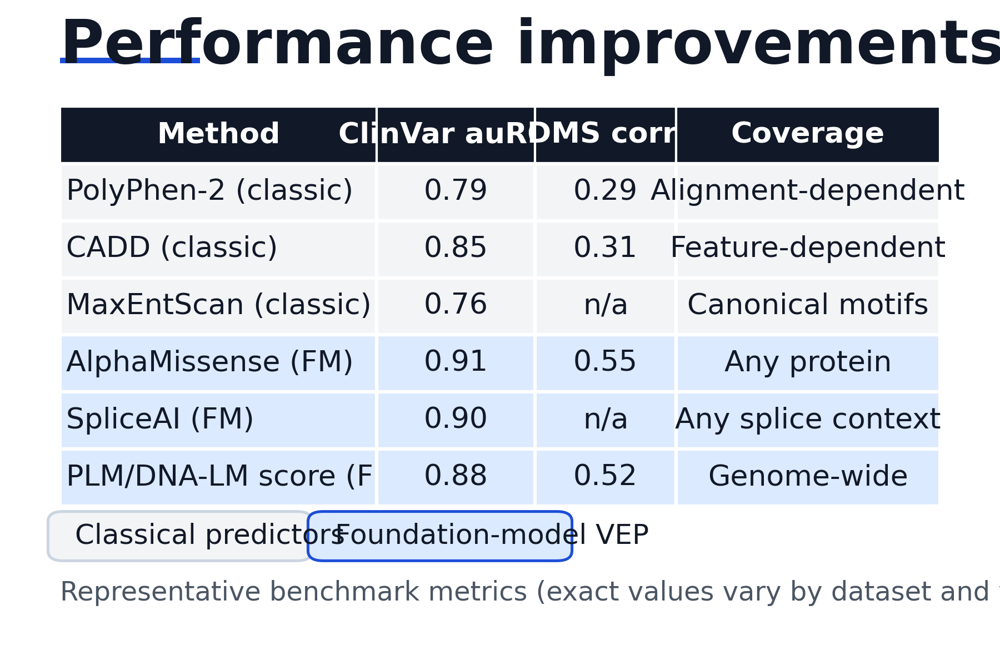

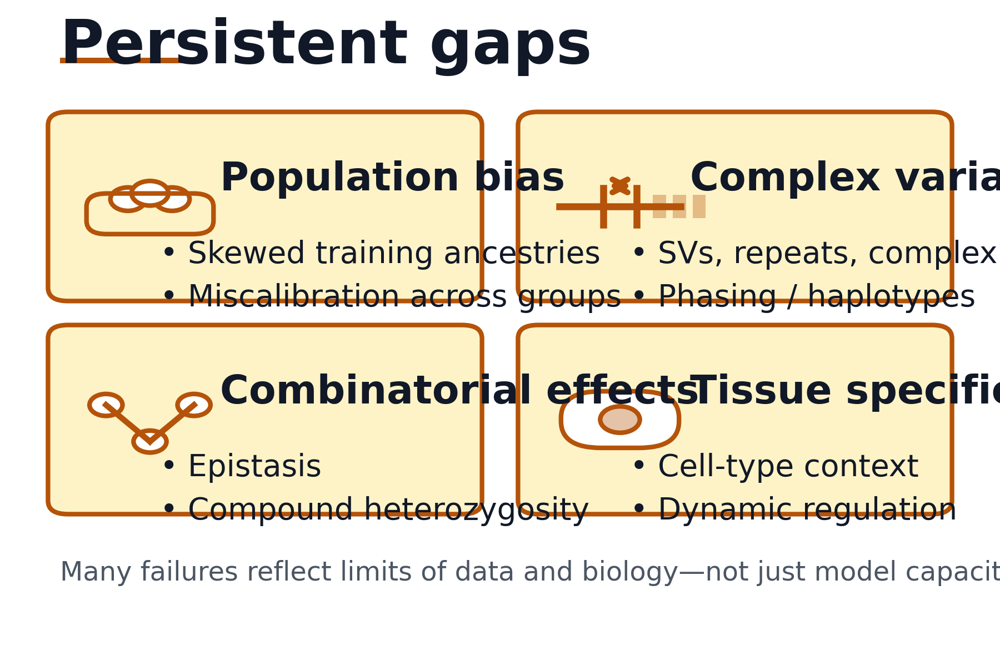
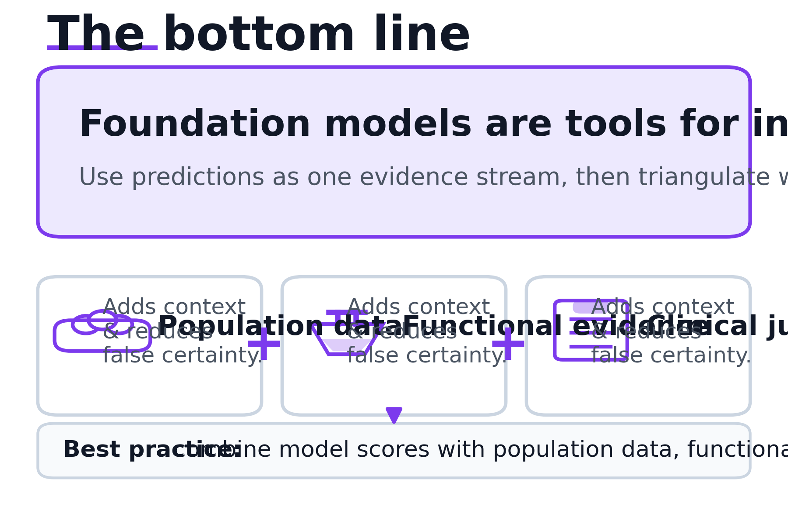
14.8 Clinical Integration Considerations
Foundation model VEP tools require thoughtful integration into clinical workflows. Their benchmark performance does not automatically translate without attention to deployment context, validation requirements, and human factors.
14.8.1 Laboratory Validation
Before clinical use, laboratories should validate foundation model tools against local truth sets representing their patient population. Published benchmark performance on ClinVar may not generalize to a laboratory’s specific case mix. Validation should assess discrimination (can the tool distinguish pathogenic from benign?), calibration (do probability estimates match observed frequencies?), and utility (does incorporating the tool improve variant classification compared to existing workflows?).
Validation requires variants with known pathogenicity independent of the computational predictions being tested. Using ClinVar variants whose classifications already incorporated CADD scores to validate CADD creates circular reasoning, a form of label circularity examined in Section 22.5. Gold-standard variants from functional studies, segregation data, or expert review provide cleaner validation targets, with detailed evaluation methodology in Chapter 21.
14.8.2 Workflow Integration
Foundation model predictions represent one evidence type among many. ACMG guidelines specify how computational evidence combines with population frequency, functional data, segregation, and clinical phenotype. Computational evidence alone rarely suffices for pathogenic or benign classification; it supports or weakens classifications established by other evidence types.
Laboratory information systems require modification to display and store foundation model outputs alongside existing annotations. Analyst training ensures appropriate interpretation: understanding that high scores indicate deleteriousness without establishing causation, recognizing when scores fall outside validated ranges, and knowing when to request additional evidence for uncertain cases.
14.8.3 Communication to Clinicians
Variant reports communicated to ordering clinicians should present foundation model evidence appropriately. Reporting raw scores without context confuses non-specialist clinicians. Reporting discrete classifications without uncertainty may convey false confidence. Effective reporting might state: “Computational tools (AlphaMissense, SpliceAI) concordantly predict this variant is likely to affect protein function, supporting the PP3 criterion for pathogenicity classification.”
When foundation model predictions conflict with other evidence, reports should acknowledge the discrepancy rather than suppressing inconvenient results. A variant segregating with disease in a family but receiving a benign computational prediction warrants explicit discussion, not quiet exclusion of the computational evidence.
14.9 Open Challenges
Current foundation model approaches leave substantial problems unsolved. These open challenges define directions for future research and areas where clinical caution remains warranted.
14.9.1 Complex Variant Types
Most current models address single nucleotide variants and small indels. Structural variants (deletions, duplications, inversions spanning kilobases to megabases) remain largely outside foundation model capabilities. Copy number variation, repeat expansions, and complex rearrangements alter genome architecture in ways current sequence models cannot represent. Extending foundation model paradigms to these variant classes requires architectural innovations beyond current approaches.
14.9.2 Combinatorial Effects
Genomes contain multiple variants that may interact. Compound heterozygosity (two variants affecting both copies of a gene) creates pathogenic states from individually tolerable variants, a clinical scenario examined in Section 1.4.1 and Section 26.3.2. Modifier variants in other genes modulate penetrance. Haplotype effects mean variants on the same chromosome have different consequences than variants on opposite chromosomes, with phasing methods to distinguish these scenarios detailed in Section 1.4. Current models score variants independently, ignoring these interactions that determine clinical presentation.
14.9.3 Phenotype Specificity
A variant pathogenic for one phenotype may be benign for another. SCN5A variants cause distinct cardiac arrhythmia syndromes depending on their specific functional effects [Citation Needed]. Foundation models trained on pathogenic/benign labels average across phenotypes, potentially obscuring clinically relevant specificity. Phenotype-specific training requires much larger datasets than currently available.
14.9.4 Temporal and Environmental Context
Variant effects often depend on age, environmental exposures, or physiological state. A variant pathogenic under metabolic stress may be tolerable at baseline. Foundation models capture sequence context but not the dynamic biological context determining phenotypic expression. Integrating longitudinal clinical data with sequence-level predictions remains an unsolved challenge.
14.9.5 Equity and Access
State-of-the-art foundation models require substantial computational resources for training and sometimes for inference. Laboratories in resource-limited settings may lack access to cutting-edge tools, creating a two-tiered system where well-funded institutions deploy sophisticated variant interpretation while others rely on simpler methods. Precomputed scores (like AlphaMissense’s proteome-wide release) partially address computational barriers, but equity concerns extend far beyond compute access.
Training data composition determines which patients foundation models serve well. ClinVar contains many more pathogenic variant classifications for European-ancestry individuals than for other populations (Landrum et al. 2018). Protein language models trained predominantly on sequences from well-studied organisms may capture evolutionary constraints less accurately for proteins divergent from training distributions. The consequence is systematic: variant interpretation performs best for patients who already benefit most from biomedical research, and worst for those historically excluded. A diagnostic laboratory serving a diverse urban population will encounter variants where foundation model predictions are less reliable precisely because those variants come from underrepresented ancestries.
Validation cohorts exhibit similar biases. When foundation models are evaluated on ClinVar or gnomAD-derived benchmarks, performance metrics reflect accuracy for the populations overrepresented in those resources. A model achieving 0.95 auROC on standard benchmarks may achieve substantially lower discrimination for African-ancestry variants simply because the benchmark itself undersamples that population. Equitable deployment requires ancestry-stratified evaluation that explicitly reports performance gaps, not aggregate metrics that obscure disparities (Chapter 21). The broader implications of these biases, and governance frameworks for addressing them, receive comprehensive treatment in Chapter 29.
14.10 Tools for Interpretation, Not Oracles
Foundation models have transformed variant effect prediction from feature engineering to representation learning. Protein language models capture evolutionary constraint at resolution that multiple sequence alignments cannot match. DNA language models and regulatory models extend coverage to noncoding variants across the genome. Multi-omic architectures provide mechanistic predictions enabling hypothesis generation beyond bare deleteriousness scores. The best current methods substantially outperform classical approaches on established benchmarks, particularly for rare variants and novel genes where training data are sparse.
Yet benchmark performance does not automatically translate to clinical utility. Calibration requires careful attention: a model may discriminate pathogenic from benign variants while systematically overestimating or underestimating probabilities. Uncertainty quantification remains immature; models often produce confident predictions for inputs that fall outside their training distribution. Population bias persists despite foundation model advances; improvements over classical methods are smallest for ancestry groups underrepresented in training data. Complex variant types, combinatorial effects, and tissue-specific consequences remain beyond current capabilities.
Clinical deployment demands humility alongside enthusiasm. Foundation model VEP tools are aids to human interpretation, not autonomous classifiers. Their predictions inform rather than determine variant classification, complementing population frequency data, functional assay evidence, segregation analysis, and clinical judgment. Used appropriately, they accelerate diagnosis and reduce missed findings. Used as oracles, they create false confidence and may perpetuate existing inequities in genomic medicine. Clinical workflows (Chapter 26, Chapter 25) integrate these predictions alongside uncertainty quantification (Chapter 23) and interpretability methods that probe what foundation models have learned (Chapter 24). Variant effect prediction sits at the center of genomic medicine; foundation models have raised its ceiling while the work of achieving its potential continues.